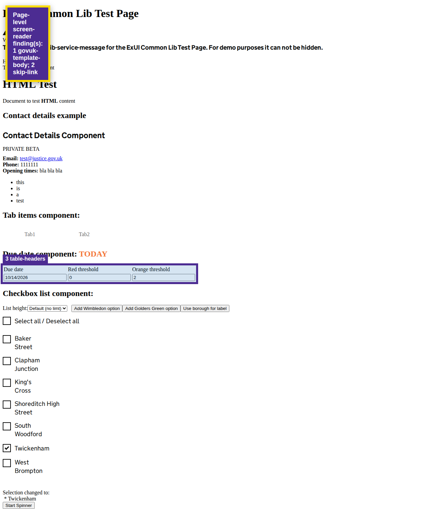

Automated heuristics support investigation; they do not replace screen-reader testing or establish WCAG conformance.
View page screenshot

1. govuk-template-body
The page should use the GOV.UK template body class during the template migration.
Selector: page
Inspect DOM snippet
2. skip-link
The page should expose a visible skip-to-main-content link.
Selector: page
Inspect DOM snippet
3. table-headers
Screen-reader users need row or column headers in data tables.
Selector: table
Inspect DOM snippet
<table _ngcontent-ng-c371440104=""><tr _ngcontent-ng-c371440104=""><td _ngcontent-ng-c371440104="">Due date</td><td _ngcontent-ng-c371440104="">Red threshold</td><td _ngcontent-ng-c371440104="">Orange threshold</td></tr><tr _ngcontent-ng-c371440104=""><td _ngcontent-ng-c371440104=""><input _ngcontent-ng-c371440104="" type="text" aria-label="Due date" style=""></td><td _ngcontent-ng-c371440104=""><input _ngcontent-ng-c371440104="" type="number" aria-label="Red threshold" style=""></td><td _ngcontent-ng-c371440104=""><input _ngcontent-ng-c371440104="" type="number" aria-label="Orange threshold" style=""></td></tr></table>